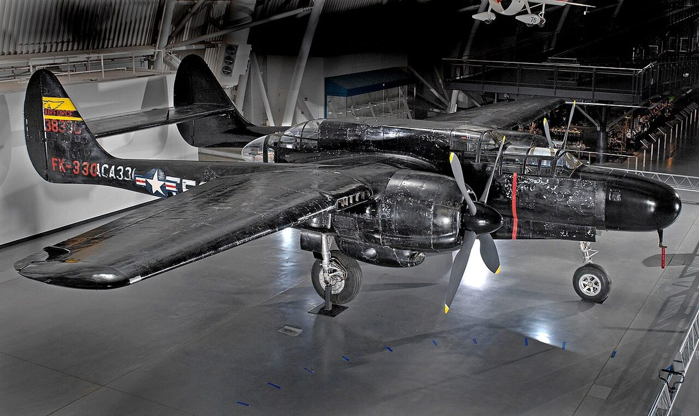

A jumbo jet can weigh more than a hundred cars, yet it cruises at ten kilometers high. The answer is a four-way tug-of-war between four forces.
A big passenger airplane can weigh as much as a hundred cars stacked together. Somehow, a pair of wings carries all that weight up to around ten kilometers high and keeps it there. There is no magic and no anti-gravity involved. It is a careful balance of four forces, and the star of the show is the wing.
Aerodynamics is the fancy word for how air moves around things. Get the air moving the right way, and it will hold up a whole aircraft. Here is how the trick works.
The four forces of flight
Every flying aircraft is being pulled and pushed by four forces at once, and flight is really just the art of balancing them.
- Weight pulls the plane down toward Earth, because of gravity.
- Lift pushes the plane up, and this is the force that actually holds an airplane in the air. It is generated by the wings as the plane moves through the air.
- Thrust pushes the plane forward — that is the job of the engines.
- Drag pulls the plane backward. Drag is just the air resisting the plane's motion, like the shove you feel sticking your hand out of a moving car window.
For the plane to climb, lift has to beat weight. To speed up, thrust has to beat drag. When the upward and downward forces match, and the forward and backward forces match, the plane cruises along calmly at a steady speed, neither rising nor sinking.
The wing is the whole secret
Most of an airplane's lift comes from its wings, and the shape of the wing does all the work. An airplane wing is curved on top and flatter on the bottom — that special shape has its own name, the airfoil.

Here is a simple way to picture it. As the plane speeds forward, air rushes over both the top and the bottom of the wing. But because the top is curved, the air sweeping over the top has to stretch out and speeds up — while the air sliding along the flatter bottom moves more slowly.
Faster-moving air pushes less hard than slower-moving air. So the air above the wing ends up pressing down a little less than the air below the wing presses up. That difference in pressure is what lifts the wing — and the whole airplane attached to it. Higher pressure always pushes toward lower pressure, so the air underneath shoves the wing upward.
Two things flight cannot do without
Two rules make sure lift actually happens, and both are easy to remember.
First, the plane has to keep moving. There has to be motion between the airplane and the air. A wing sitting still on the ground makes no lift, no matter how perfectly curved it is. That is why a plane has to race down the runway and reach takeoff speed before its wings can carry it up.
Second, the plane needs air in the first place. Lift comes from air, so the plane has to stay inside our atmosphere. That is also why lift depends on how thin the air is: the higher a plane climbs, where the air gets thinner and less dense, the faster it has to go to hold itself up.
Putting it together
So an airplane stays in the sky by racing forward fast enough that its specially shaped wings grab the air and turn speed into a gentle upward push. Lift beats weight, so up it goes. Thrust beats drag, so on it flies.
Next time a huge jet roars overhead and seems to hang impossibly in the sky, remember: it is not defying gravity. It is just winning a very well-balanced tug-of-war, one wing at a time.
Sources: NASA for Kids and Students — What Is Aerodynamics? (Grades K–4) · NASA Glenn Research Center — Four Forces on the Flyer